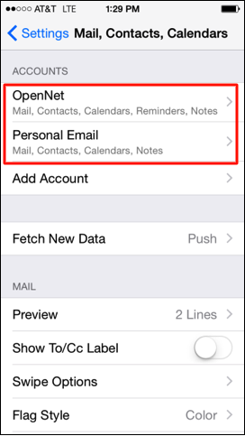

Your default email, contacts, and calendar will automatically be set to the device option. To change your defaults from device to OpenNet, Navigate to Settings > Mail, Contacts, Calendars. Once there, you will see all the accounts currently on the device.
Two accounts are currently configured on the device, Personal Email and OpenNet.
Scroll down to the Mail section and tap Default Account. Select OpenNet.
To return back to the Mail, Contacts, and Calendars settings, tap the Blue Arrow in the top left hand corner.
Scroll down to the Contacts section and tap Default Account. Select OpenNet.
Tap the Blue Arrow to return to Settings. Scroll down to the Calendars section and tap Default Calendar. Select the calendar listed under OpenNet.
Your Default Mail, Contacts, and Calendar are now set to OpenNet.